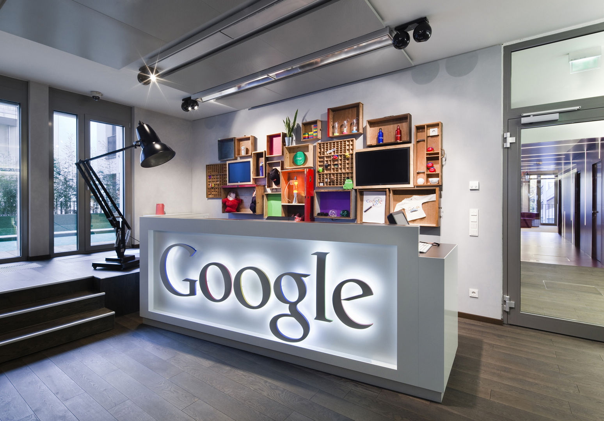
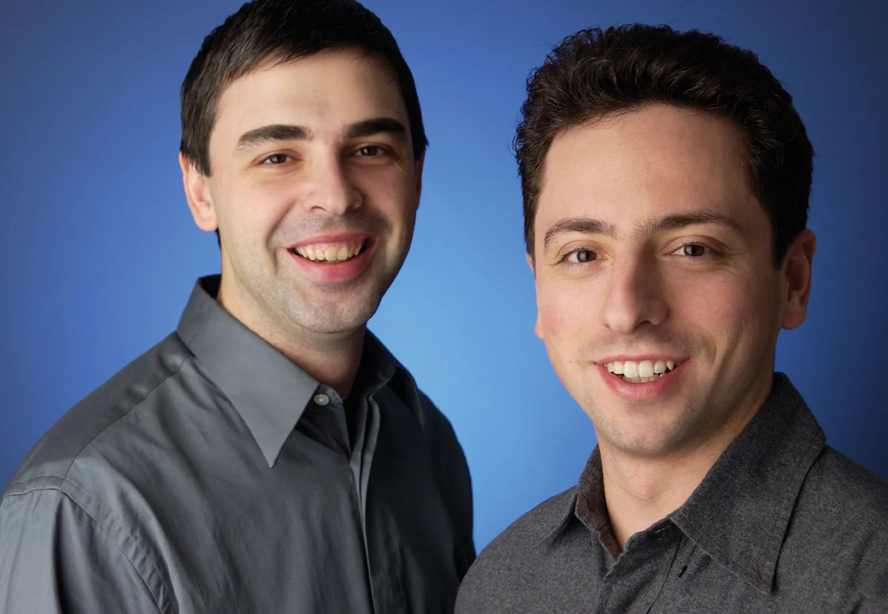
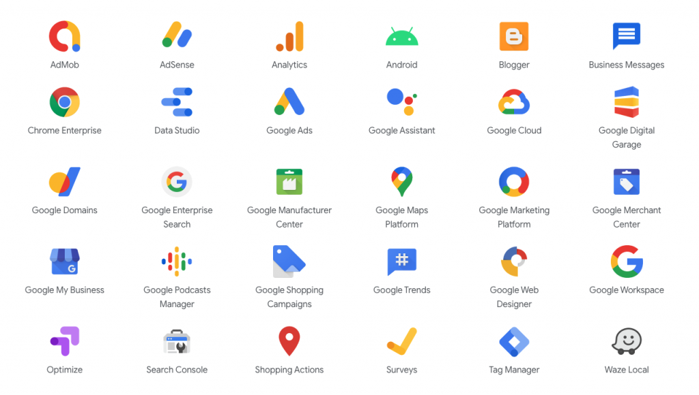
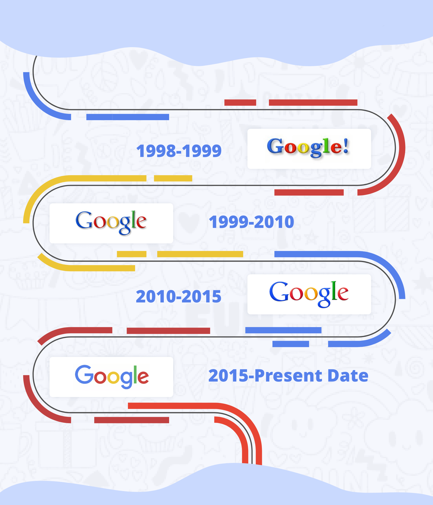

Goo gle LLC is an American multinational technology company that focuses on search engine technology, online advertising, cloud computing, computer software, quantum computing, e-commerce, artificial intelligence, and consumer electronics. It has been referred to as the "most powerful company in the world" and one of the world's most valuable brands due to its market dominance, data collection, and technological advantages in the area of artificial intelligence. It is considered one of the Big Five American information technology companies, alongside Amazon, Apple, Meta, and Microsoft.

Goo gle was founded on September 4, 1998, by Larry Page and Sergey Brin while they were PhD students at Stanford University in California. Together they own about 14% of its publicly listed shares and control 56% of the stockholder voting power through super-voting stock. The company went public via an initial public offering (IPO) in 2004. In 2015, Goo gle was reorganized as a wholly owned subsidiary of Alphabet Inc. Goo gle is Alphabet's largest subsidiary and is a holding company for Alphabet's Internet properties and interests. Sundar Pichai was appointed CEO of Goo gle on October 24, 2015, replacing Larry Page, who became the CEO of Alphabet. On December 3, 2019, Pichai also became the CEO of Alphabet.
The company has since rapidly grown to offer a multitude of products and services beyond Goo gle Search, many of which hold dominant market positions. These products address a wide range of use cases, including 5email (Gmail), navigation (Maps), cloud computing (Cloud), web browsing (Chrome), video sharing (YouTube), productivity (Workspace), operating systems (Android), cloud storage (Drive), language translation (Translate), photo storage (Photo), video calling (Meet), smart home (Nest), smartphones (Pixel), wearable technology (Fitbit), gaming (Stadia), music streaming (YouTube Music), video on demand (TV), artificial intelligence (Assistant), machine learning APIs (TensorFlow), AI chips (TPU), and more. Discontinued Goo gle products include Glass, Goo gle +, Reader, Play Music, Nexus, Hangouts, and Inbox by Gmail.
Goo gle strives for ambitious technological innovations aimed at solving humanity's biggest problems. Some of these include quantum computing (Sycamore), self-driving cars (Waymo, formerly theGoo gle Self-Driving Car Project), smart cities (Sidewalk Labs), and transformer models (Goo gle Brain).
Goo gle and YouTube are the two most visited websites worldwide followed by Facebook and Twitter. Goo gle is also the largest search engine, mapping and navigation application, email provider, office suite, video sharing platform, photo and cloud storage provider, mobile operating system, web browser, ML framework, and AI virtual assistant provider in the world as measured by market share. On the list of most valuable brands, Goo gle> is ranked second by Forbes and fourth by Interbrand. It has received significant criticism involving issues such as privacy concerns, tax avoidance, censorship, search neutrality, antitrust and abuse of its monopoly position.
Larry & Sergey

Goo gle began in January 1996 as a research project by Larry Page and Sergey Brin when they were both PhD students at Stanford University in California. The project initially involved an unofficial "third founder", Scott Hassan, the original lead programmer who wrote much of the code for the original Goo gle Search engine, but he left before Goo glewas officially founded as a company; Hassan went on to pursue a career in robotics and founded the company Willow Garage in 2006.
While conventional search engines ranked results by counting how many times the search terms appeared on the page, they theorized about a better system that analyzed the relationships among websites. They called this algorithm PageRank; it determined a website's relevance by the number of pages, and the importance of those pages that linked back to the original site. Page told his ideas to Hassan, who began writing the code to implement Page's ideas.
Page and Brin originally nicknamed the new search engine "BackRub", because the system checked backlinks to estimate the importance of a site. Hassan as well as Alan Steremberg were cited by Page and Brin as being critical to the development of Goo gle . Rajeev Motwani and Terry Winograd later co-authored with Page and Brin the first paper about the project, describing PageRank and the initial prototype of the Goo gle search engine, published in 1998. Héctor GarcÃa-Molina and Jeff Ullman were also cited as contributors to the project. PageRank was influenced by a similar page-ranking and site-scoring algorithm earlier used for RankDex, developed by Robin Li in 1996, with Larry Page's PageRank patent including a citation to Li's earlier RankDex patent; Li later went on to create the Chinese search engine Baidu.
Eventually, they changed the name to Goo gle ; the name of the search engine was a play on the word googol, a very large number written 10100 (1 followed by 100 zeros), picked to signify that the search engine was intended to provide large quantities of information.
The domain name www.Goo gle .com was registered on September 15, 1997, and the company was incorporated on September 4, 1998. It was based in the garage of Susan Wojcicki in Menlo Park, California. Craig Silverstein, a fellow PhD student at Stanford, was hired as the first employee.
Products and Services

Goo gle indexes billions of web pages to allow users to search for the information they desire through the use of keywords and operators. According to comScore market research from November 2009, Goo gle Search is the dominant search engine in the United States market, with a market share of 65.6%. In May 2017, Goo gle enabled a new "Personal" tab in Goo gle Search, letting users search for content in theirGoo gle accounts' various services, including email messages from Gmail and photos from Goo gle> Photos.
Goo gle launched its Goo gle News service in 2002, an automated service which summarizes news articles from various websites. Goo gle also hosts Goo gle Books, a service which searches the text found in books in its database and shows limited previews or and the full book where allowed.
History of Google

Goo gle was officially launched in 1998 by Larry Page and Sergey Brin to market Goo gle Search, which has become the most used web-based search engine. Larry Page and Sergey Brin, students at Stanford University in California, developed a search algorithm at first known as "BackRub" in 1996, with the help of Scott Hassan and Alan Steremberg. The search engine soon proved successful and the expanding company moved several times, finally settling at Mountain View in 2003. This marked a phase of rapid growth, with the company making its initial public offering in 2004 and quickly becoming one of the world's largest media companies. The company launched Goo gle News in 2002, Gmail in 2004, Goo gle Maps in 2005, Goo gle Chrome in 2008, and the social network known as Goo gle + in 2011 (which was shut down in April 2019), in addition to many other products. In 2015, Goo gle became the main subsidiary of the holding company Alphabet Inc.
googleThe search engine went through many updates in attempts to eradicate search engine optimization
Goo gle has engaged in partnerships with NASA, AOL, Sun Microsystems, News Corporation, Sky UK, and others. The company set up a charitable offshoot, Goo gle.org, in 2005.
Timeline of GoogleSearch
| Time period | Development |
|---|---|
| 1966-1997 | Development of basic technology, launch of search engine, attachments like gmail |
| 2000 | |
| 2001-2004 | Google launches many new search categories, such as Google News, Google Books, and Google Scholar. |
| 2002 onward | The beginning of explicitly announced search algorithm updates. |
| 2008-2010 | |
| 2005, 2009, 2012 | Google starts using web histories to help in searches (2005), experimentally launches social search (2009), and launches Search Plus Your World (2012). |
| 2009 - 2010 | Google starts using web histories to help in searches (2005), experimentally launches social search (2009), and launches Search Plus Your World (2012). |
| 2011 - 2014 | Caffeine update for faster indexing of the web and fresher and on-topic search results. |
| 2011 - 2014 | Google Panda (an update to some parts of Google's search algorithm) is released in 2011, with announced updates continuing till September 2014 (Panda 4.1). Stated goals include cracking down on spam, content farms, scrapers, and websites with a high ad-to-content ratio. |
| Google Penguin (an update to some parts of Google's search algorithm) is released in 2012, with the goal of concentrating on webspam. The last named update is in October 2014. Starting December 2014, Penguin moves to continuous updates (Penguin Everflux). | |
| 2012 onward | Google integrates Google Knowledge Graph into its search results. |
| 2013-2014-2015 onward | Google releases Google Hummingbird, an update that may enable semantic. |
| Google makes a major update to its algorithm for local search. The update gets the name Google Pigeon. | |
| Google alerts webmasters to mobile usability issues in January, and announces a major update to its search algorithm, to be rolled out starting April 21, 2015, that will heavily demote mobile-unfriendly sites for web searches on mobile devices. | |
| 2019 April | In early April 2019, a large de-indexing bug was reported to be dropping pages out of the index. Google wrote on April 11, 2019, "The indexing issue has now been fully resolved. We apologize for the inconvenience. We appreciate your patience as we restored normal operation. |